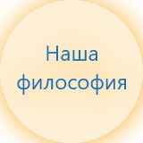
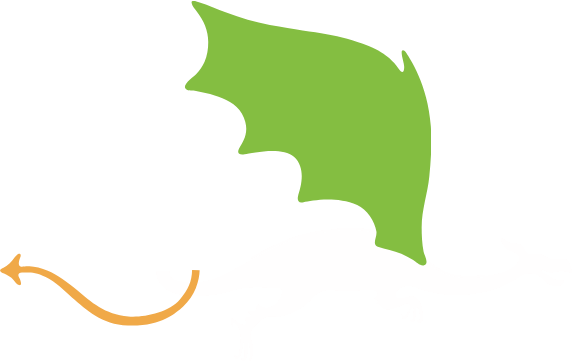
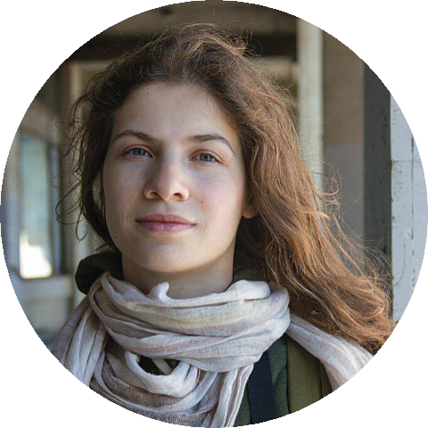

Что такое TidenWiden
Мы делаем такой органайзер, в котором дела, выполняемые человеком в реальной жизни, отображаются в виде образов в виртуальном пространстве.
Это особенно подходит людям с образным мышлением – то есть тем, кто, решая какую-то проблему, представляет ее себе наглядно, в образах.
А также тем, кому интересно превращать свою жизнь в игру. Все дела в нашем органайзере – подвиги. Они поделены на три типа: маленький подвиг,
большой и звездный (разовое дело, большой проект и систематическая активность — изучение языка или спорт). Пользователь выбирает для дел символы:
для небольших разовых дел — маленькие (в текущей теме «Средневековая деревня» это бабочки или цветы), для больших — строящиеся здания или растущие деревья.
Каждое сделанное дело становится элементом пейзажа, и постепенно на изначально пустых холмах возникает деревушка. Тема будет развиваться.
Появятся и другие — космический полет, парусная регата и так далее.
-
Органайзер
-
Дружелюбный помощник
-
ToDo-лист
-
Будильник
Video placeholder
Как это работает?
Tiden-Widen — это результат работы психологов и научных исследований в области метафорического мышления.
-
Деревья, дома и целые созвездия vs
просто галочки, отмечающие
выполненные дела -
Сочетание образного мышления с аналитическим помогает преодолевать трудности и поддерживать позитивное настроение. Вместе они сильнее.
-
Дракон Tiden-Widen vs
простые уведомления -
Дружелюбная среда, эмоциональная поддержка, положительная мотивация — все это нужно, чтобы не только почувствовать себя успешным, но и быть им!
-
Деревья, дома и целые созвездия vs
просто галочки, отмечающие
выполненные дела -
Ваш успех во всех делах становится наглядным! Вера в себя крепнет.
И еще один секрет: сейчас часто советуют выйти из «зоны комфорта» в «зону риска», чтобы достичь чего-то нового; мы же предлагаем не выйти из зоны комфорта, а создать среду, в которой творить и развиваться легко и интересно.

Для кого предназначен наш органайзер?
-
устали от скучных крестиков, галочек, кружочков, чёрточек и скобочек
-
любите раскрашивать свою жизнь в яркие цвета
-
хотите немедленно видеть результат своих дел
-
стараетесь организовать себя и всех вокруг или только учитесь быть организованным и успешным
-
стремитесь управлять большими проектами
-
обладаете чувством юмора

Приручите дракона!
Дракон Tiden-Widen совсем не злобный, и он готов стать вашим помощником. Дракон будет поднимать вам настроение, дарить награды и приятные сюрпризы, напоминать о предстоящих событиях, защищать от ошибок и выводить из сложных ситуаций.
Совершайте подвиги!
Каждый день мы делаем сотни выборов (от того, что съесть на завтрак, до жизненно важных решений), начинаем и заканчиваем дела, заставляем себя сосредотачиваться и отключаться. И всё это подвиги, большие и маленькие! За маленький подвиг в органайзере появляется цветок или прилетает бабочка. Благодаря большому строятся дома или вырастают деревья.
Зажигайте звёзды!
В Tiden-Widen есть и звёздные подвиги — это то, что вы выполняете регулярно, но результат где-то далеко в будущем. Например, занятия спортом или иностранным языком. Сложно выполнять монотонные задачи, если не получаешь отдачу здесь и сейчас. В нашем органайзере каждый раз за это вы получаете звезду и в итоге создаёте целые созвездия!
Поддержите проект на Planeta.ru!
Станьте художником TidenWiden
TidenWiden – это среда для творчества.
Если вы художник, предложите нам свои идеи по оформлению ландшафта,
значков и объектов органайзера. Мы обсудим возможное сотрудничество.
Создавайте целые миры вместе с нами!
Напишите нам на адрес tidenwiden@gmail.com

Я не очень люблю списки дел, а вот волшебство — это для меня! Поэтому превращать рутину в сказку — сплошное удовольствие. Внешнее оформление всячески этому способствует, тема средневековья греет мне душу, но здорово, что разработчики позволяют художникам создать свою тему. Ведь и в жизни у каждого из нас своя сказка.
— Алина Алейникова, аниматор

Я очень хорошо знаю, насколько важно человеку иметь устойчивую, но одновременно динамичную и вдохновляющую картину мира и видеть себя в ней. А если она будет сказочной или фантазийной – вообще отлично! Потому что в современном мире, полном технологических возможностей, все мы немного волшебники и все мы родом из детства — живого, теплого и воодушевляющего. TidenWiden мне кажется шагом в сторону создания образа – зеркала мира, которое поможет человеку в его делах.
— Мария Работнова, бизнес-коуч